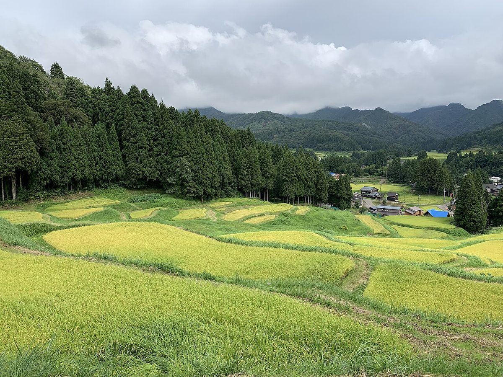

ACCESS
アクセス
所在地と地図です。

所在地
| 住所 | 茨城県桜川市門毛62 |
|---|---|
| 電話 | 0296-75-1666 |
| 駐車場 | 準備中(お問い合わせください) |
| 営業時間・定休日 | 準備中(お問い合わせください) |
ご来店前にお電話 0296-75-1666 でご確認いただくと安心です。
ACCESS
所在地と地図です。

| 住所 | 茨城県桜川市門毛62 |
|---|---|
| 電話 | 0296-75-1666 |
| 駐車場 | 準備中(お問い合わせください) |
| 営業時間・定休日 | 準備中(お問い合わせください) |
ご来店前にお電話 0296-75-1666 でご確認いただくと安心です。